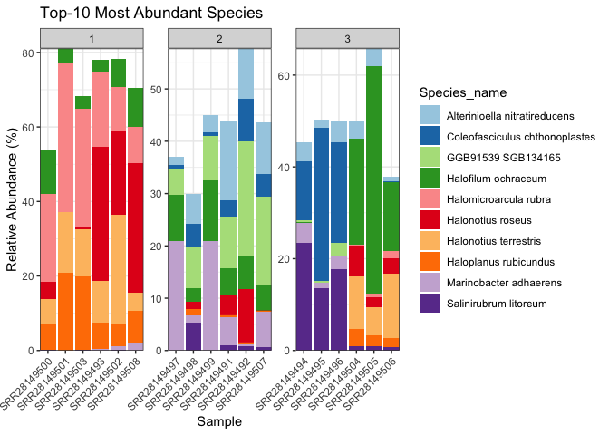
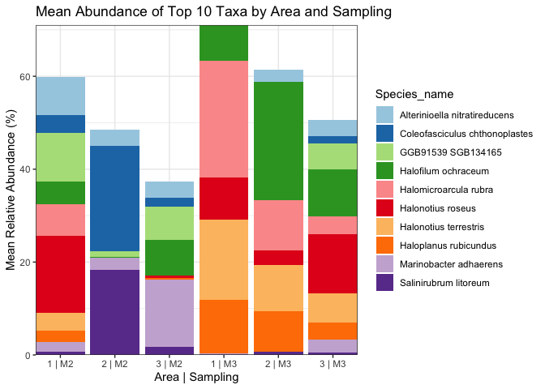

Organisation: Data Science Platform
Responsibles: Albert Pallejà Caro (apca@dtu.dk)
Alexander Zubov
(alzub@dtu.dk)
Edir Sebastian Vidal Casto
(s243564@student.dtu.dk)
Juliana Assis (jasge@dtu.dk)
Abundace overview tutorial#
This markdown is to plot an abundance overview of the top-10 most abundant species of the dataset
R Packages that need to be installed#
library(ggplot2)
library(dplyr)
library(tidyr)
library(RColorBrewer)
Load data objects#
Load species abundance, taxonomical annotation and metadata file
# Abundance table
abundance <- readRDS(file = "../data/MetaphlanAbundance_Species.rds")
rownames(abundance) <- gsub("_SRR_db1.metaphlan", "", rownames(abundance))
# Taxonomical annotation
annotation <- readRDS(file = "../data/MetaphlanAnnotations_Species.rds")
# Metadata
metadata <- read.table(file = "../data/metadata.tsv",
header = TRUE, sep = "\t",
quote = "",
row.names = NULL)
rownames(metadata) <- metadata$Sample
Take only samples with sequencing and metadata information#
abundance <- abundance[rownames(abundance) %in%
rownames(metadata),]
Calculate total abundances per species#
taxa_total <- colSums(abundance)
top_taxa <- names(sort(taxa_total,
decreasing = TRUE))[1:10]
Filter to top 10 taxa#
abundance_top10 <- as.data.frame(abundance) %>%
select(all_of(top_taxa))
Convert to long format for ggplot#
Move rownames (samples) to a column
Adding the species name for the plot
Adding the grouping columns: Area and Sampling
abundance_top10$Sample <- rownames(abundance_top10)
abundance_long <- abundance_top10 %>%
pivot_longer(cols = -Sample,
names_to = "Species",
values_to = "Abundance")
abundance_long$Species_name <- annotation$species[match(abundance_long$Species,
rownames(annotation))]
abundance_long$Area <- metadata$Area[match(abundance_long$Sample,
metadata$Sample)]
abundance_long$Sampling <- metadata$Sampling[match(abundance_long$Sample,
metadata$Sample)]
Stack bar plot of the top-10 most dominant species#
💡 Tip: Ensure Sample is a factor ordered by Sampling + Sample name (for visual grouping).
🔄 Data Preparation
arrange(Sampling, Sample): Sorts the abundance_long data frame by the Sampling and Sample columns to ensure consistent order.
mutate(Sample = factor(…)): Converts the Sample column to a factor with levels ordered as they appear in the data. This prevents ggplot2 from reordering them alphabetically.
abundance_long <- abundance_long %>%
arrange(Sampling, Sample) %>%
mutate(Sample = factor(Sample,
levels = unique(Sample)))
pbar <- ggplot(abundance_long, aes(x = Sample,
y = Abundance,
fill = Species_name)) +
geom_bar(stat = "identity",
position = "stack",
show.legend = TRUE) +
scale_fill_brewer(palette = "Paired") +
labs(title = "Top-10 Most Abundant Species",
x = "Sample",
y = "Relative Abundance (%)") +
theme_bw() +
theme(axis.text.x = element_text(angle = 45,
hjust = 1)) +
scale_y_continuous(expand = c(0, 0)) +
scale_x_discrete(expand = c(0, 0)) +
facet_wrap(. ~ Area,
scales = "free")
pbar

# Save it as a png
ggsave("../results/report/03_Abundance-overview/01_top10_species.png",
width = 8, height = 6, dpi = 300)
Let’s summarize the same plot per Area and Sampling#
Add Sample column and merge with metadata
Pivot to long format
Summarize abundance by Area + Sampling + Species
Adding the species name for the plot
abundance_top10$Area <- metadata$Area
abundance_top10$Sampling <- metadata$Sampling
abundance_long <- abundance_top10 %>%
pivot_longer(cols = all_of(top_taxa),
names_to = "Species",
values_to = "Abundance")
abundance_summary <- abundance_long %>%
group_by(Area, Sampling, Species) %>%
summarise(MeanAbundance = mean(Abundance),
.groups = "drop") #ungroup
abundance_summary$Species_name <-
annotation$species[match(abundance_summary$Species,
rownames(annotation))]
pbar_sum <- ggplot(abundance_summary,
aes(x = interaction(Area,
Sampling,
sep = " | "),
y = MeanAbundance,
fill = Species_name)) +
geom_bar(stat = "identity",
position = "stack",
show.legend = TRUE) +
scale_fill_brewer(palette = "Paired") +
theme_bw() +
labs(title = "Mean Abundance of Top 10 Taxa by Area and Sampling",
x = "Area | Sampling",
y = "Mean Relative Abundance (%)") +
theme(axis.text.x = element_text(hjust = 0.5),
strip.text = element_text(face = "bold")) +
scale_y_continuous(expand = c(0, 0)) +
scale_x_discrete(expand = c(0, 0))
pbar_sum

# Save it as a png
ggsave("../results/report/03_Abundance-overview/02_top10_species_per_area_sampling.png",
width = 8, height = 6, dpi = 300)
Printing all package versions (good practice to ensure reproducibility)#
## R version 4.3.1 (2023-06-16)
## Platform: aarch64-apple-darwin20 (64-bit)
## Running under: macOS 26.3.1
##
## Matrix products: default
## BLAS: /Library/Frameworks/R.framework/Versions/4.3-arm64/Resources/lib/libRblas.0.dylib
## LAPACK: /Library/Frameworks/R.framework/Versions/4.3-arm64/Resources/lib/libRlapack.dylib; LAPACK version 3.11.0
##
## locale:
## [1] C.UTF-8/C.UTF-8/C.UTF-8/C/C.UTF-8/C.UTF-8
##
## time zone: Europe/Copenhagen
## tzcode source: internal
##
## attached base packages:
## [1] stats graphics grDevices utils datasets methods base
##
## other attached packages:
## [1] RColorBrewer_1.1-3 tidyr_1.3.1 dplyr_1.1.4 ggplot2_3.5.1
##
## loaded via a namespace (and not attached):
## [1] vctrs_0.6.5 cli_3.6.3 knitr_1.49 rlang_1.1.4
## [5] xfun_0.49 purrr_1.0.4 generics_0.1.3 textshaping_0.4.0
## [9] labeling_0.4.3 glue_1.8.0 colorspace_2.1-1 htmltools_0.5.8.1
## [13] ragg_1.3.3 scales_1.3.0 fansi_1.0.6 rmarkdown_2.29
## [17] grid_4.3.1 evaluate_1.0.1 munsell_0.5.1 tibble_3.2.1
## [21] fastmap_1.2.0 yaml_2.3.10 lifecycle_1.0.4 compiler_4.3.1
## [25] pkgconfig_2.0.3 systemfonts_1.1.0 farver_2.1.2 digest_0.6.37
## [29] R6_2.5.1 tidyselect_1.2.1 utf8_1.2.4 pillar_1.9.0
## [33] magrittr_2.0.3 withr_3.0.2 tools_4.3.1 gtable_0.3.6